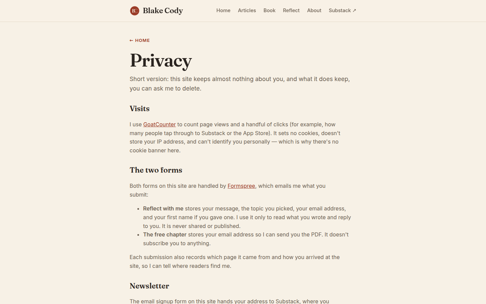

blakecody.com — UI & visual design audit / change log
/privacy.html
--ink-soft where every other page uses --accent-soft.Something useful turned up measuring this page. Its .eyebrow renders --ink-soft #6b5f52 at 5.52 and passes AA. Every other page's eyebrow renders --accent-soft #c46a4f at 3.38 and fails.
Same class, same size, same background, two different colours. So the site already contains a working version of the fix that V2 has been asking for across five pages — it is just applied on the one page nobody thought of as design work.
That makes the change lower-risk than it sounds: you are not inventing a new colour, you are propagating one you already ship.
.wrap 720px body copy 16px Inter, contrast 5.52 line length ≈ 95–100 characters per line
Everywhere else on the site, V1's 720px cap is too narrow — it squeezes three cards into 207px each and wastes half a 1440px screen. This is the one page where the same number is too wide, because this is the one page that is nothing but paragraphs.
Comfortable reading measure is 60–75 characters. At 95–100 the eye loses its place returning to the start of the next line, which is exactly the failure mode you do not want on the page where someone is trying to understand what happens to their personal messages.
Fix.privacy p,
.privacy li { max-width: 62ch; }
One rule, scoped to this page. It does not conflict with widening .wrap under V1 — in fact it becomes more necessary once you do, because a 1100px wrap would push this page past 140 characters per line.
Apply the same thinking to the book page's blurb and the Reflect intro, which are prose in a card-sized container for the same reason.
Measured: H1 → H2 "Visits" → H2 "The two forms" → H2 "Newsletter" → H2 "Asking for deletion", each an identical Fraunces heading with the same margin above and below.
The structure is correct — this is the only page on the site with a flawless heading tree — but visually it reads as one continuous column. Someone arriving from the Reflect form's inline link wants one section: what happens to my message. They have to read to find it.
FixA hairline rule (border-top: 1px solid var(--line)) above each H2, and slightly more space above than below so each heading binds to the text it introduces rather than floating between. Optionally, anchor ids on the H2s so the Reflect page's privacy link can point straight at #the-two-forms — the reader lands on their answer instead of at the top.
Measured: querySelectorAll('button, [class*=btn]') → 0. On any other page I would call that a finding. Here it is right: a privacy policy asking you to click something would be worse than one that does not.
The exception is the last section. "Asking for deletion" is the one action this page exists to enable, and it is delivered as two inline links inside a sentence — visually identical to the seven other inline links above it.
FixNot a button. Give that final section a light surface — the same --bg-card treatment as the Reflect form — so the one actionable part of the page is visibly distinct from the seven parts that are explanatory. And once the SEO report's C39 adds a contact email, that address is what belongs in it.
| Check | Result |
|---|---|
| Page depth | 1440 → 1,345px (1.49 folds) · 820 → 1,339px (1.13) · 390 → 1,746px (2.07) |
| Headings | H1 54.4px → H2 ×4 — the only clean tree on the site |
| Contrast | No failures. body 5.52 ✓ · sub 5.52 ✓ · .eyebrow 5.52 ✓ (uses --ink-soft, unlike every other page) · H1 13.62 ✓ |
| Measure | ≈95–100 characters per line at 720px |
| Buttons | 0 — correct for this page |
| Mobile nav | clientW 170 · scrollW 385 · 3 items off-screen (R1) |
| Focus ring | browser default (R3) |
Scores: privacy 76 · 404 74 · reflect 72 · about 68 · book 60 · articles 58 · homepage 45 (pre-implementation; several of its findings have since shipped).
Four fixes close almost everything that is left, because the same four items recur on every page:
| ID | One change | Closes |
|---|---|---|
| R1 | A menu button below 560px. Three of six destinations are currently unreachable on a phone, with no hamburger and no visible scrollbar. | all 7 pages · Critical |
| V2 | Stop using --accent-soft for text. Privacy already proves the fix works. | 5 pages, 8 measured failures |
| V1 | Breakpoints at 1024 and 1280 so .wrap can reach ~1100px. | all 7 pages — and it makes cards, thumbnails and the About photo work |
| R3 | A :focus-visible rule. Seven lines, site-wide. | all 7 pages · accessibility |
What the implementation passes already fixed: buttons now exist everywhere, the Substack iframe is gone in favour of a native form in your palette, every image carries dimensions, the author photograph is on the homepage, five one-word H1s became sentences, and the 404 offers three real essays instead of a dead end.
The one genuinely missing asset is book cover art (U8) — the book page still has no image other than the header logo.
UI page 07 of 7 — the UI audit is complete. Every page on blakecody.com now has both an SEO and a UI change log.
See ui/PROGRESS.md for the consolidated status, and seo/PROGRESS.md for the SEO track.
blakecody.com UI change log · generated 7 September 2026